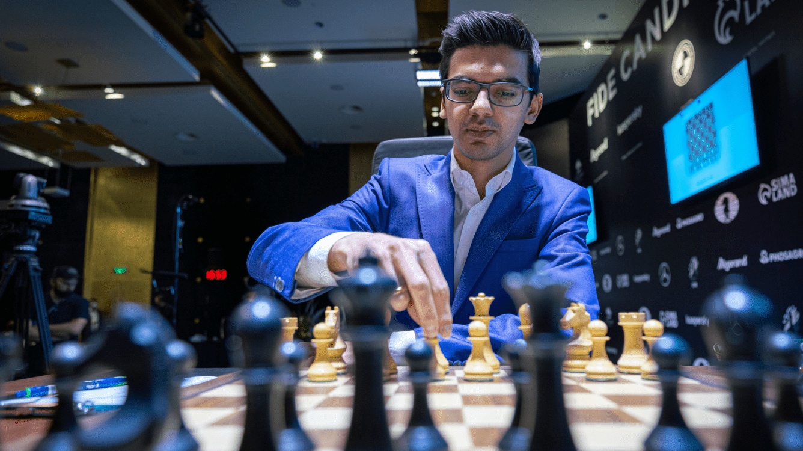

Torneio de Candidatos da FIDE 2021
Nessa pandemia, foi necessário nos reinventarmos e tivemos a oportunidade na organização Torneio de Candidatos FIDE 2021. Torneio esse que decidiu quem seria o competidor a disputar contra o atual campeão do mundo, Magnus Carlsen.
Veja mais